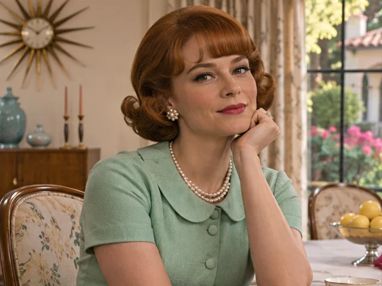

WHY WOMEN KILL
Three women. Three marriages. One house. How much can you learn about a relationship from its secrets?
Three Women, Three Marriages
Describe each character using three adjectives. Support your opinion with a scene from Episode 1.

What does she expect from marriage?
Choose: devoted · lonely · traditional · insecure · hopeful · observant
How important is her public image?
Choose: glamorous · proud · suspicious · confident · vulnerable · demanding
What makes her relationship different?
Choose: independent · open-minded · jealous · practical · defensive · ambitious
Love, Lies & Appearances
Tap a phrase to reveal its meaning. Then use it in a sentence about the pilot episode. Try at least five.
Red Flag Detector
Choose a judgement for each hypothetical situation. Explain it aloud, then compare it with a scene from Episode 1.
The Prediction Room
Imagine you have only watched Episode 1. Decide how likely each prediction is, using clues from Episode 1.
One Piece of Advice
Choose a woman and imagine she asks you for advice immediately after Episode 1.
Choose a character to begin.
Your Episode 1 Verdict
Finish these sentences aloud:
The notes contain your selected red flags, predictions, advice character and optional writing. Spoken discussion is not recorded.